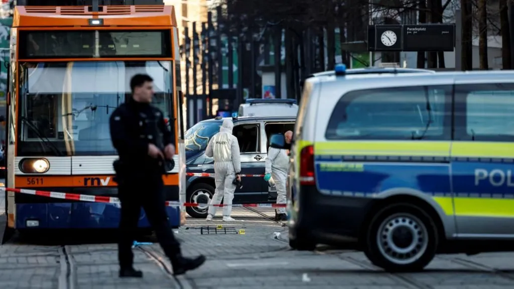
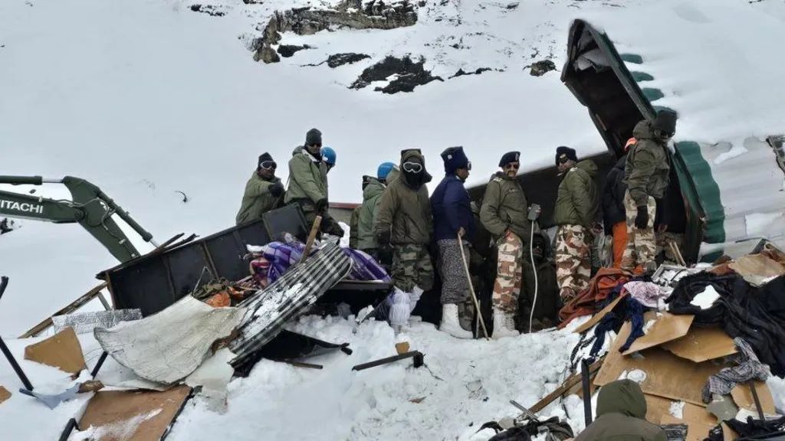

Two dead after car drives into crowd in Germany

Two people - an 83-year-old woman and a 54-year-old man - have been killed after a vehicle drove into a pedestrian area in the city of Mannheim, western Germany.
Five people were seriously injured and another five suffered minor injuries in the incident, investigators said.
Authorities arrested a lone suspect, a 40-year-old German man, who is not believed to be linked to extremism but shows "concrete indications of mental illness".
The suspect, who prosecutors said was a landscape gardener, remains in hospital in a stable condition after shooting himself with a gun loaded with blanks.
Australian whose blood saved 2.4 million babies dies
One of the world's most prolific blood donors - whose plasma saved the lives of more than two million babies - has died.
James Harrison died in his sleep at a nursing home in New South Wales, Australia on 17 February, his family said on Monday. He was 88.
Known in Australia as the man with the golden arm, Harrison's blood contained a rare antibody, Anti-D, which is used to make medication given to pregnant mothers whose blood is at risk of attacking their unborn babies.
The Australian Red Cross Blood Service who paid tribute to Harrison, said he had pledged to become a donor after receiving transfusions while undergoing a major chest surgery when he was 14.
He started donating his blood plasma when he was 18 and continued doing so every two weeks until he was 81.
Dozens found alive in metal containers after India avalanche

Dozens of construction workers have been pulled out alive from metal containers after they were buried by an avalanche in the Himalayas in India's Uttarakhand state.
They survived - some as long as nearly two days - as the containers in which they were living had enough oxygen to sustain them until rescuers could dig them out, Indian media reported quoting officials.
On Friday, 54 workers were buried when the avalanche hit a construction camp near Mana village. Eight were killed, while the other 46 were rescued.
The operation lasted almost 60 hours in sub-zero temperatures and concluded on Sunday.